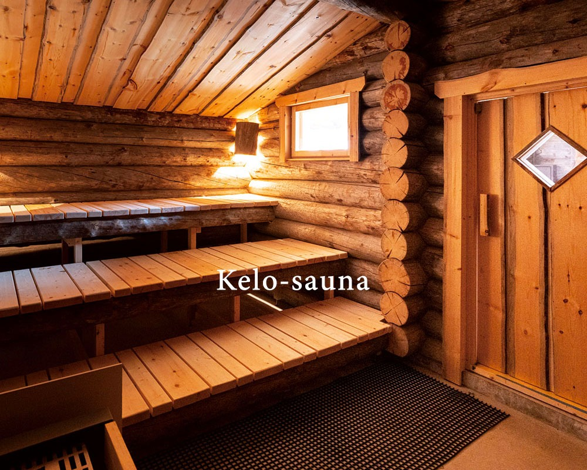
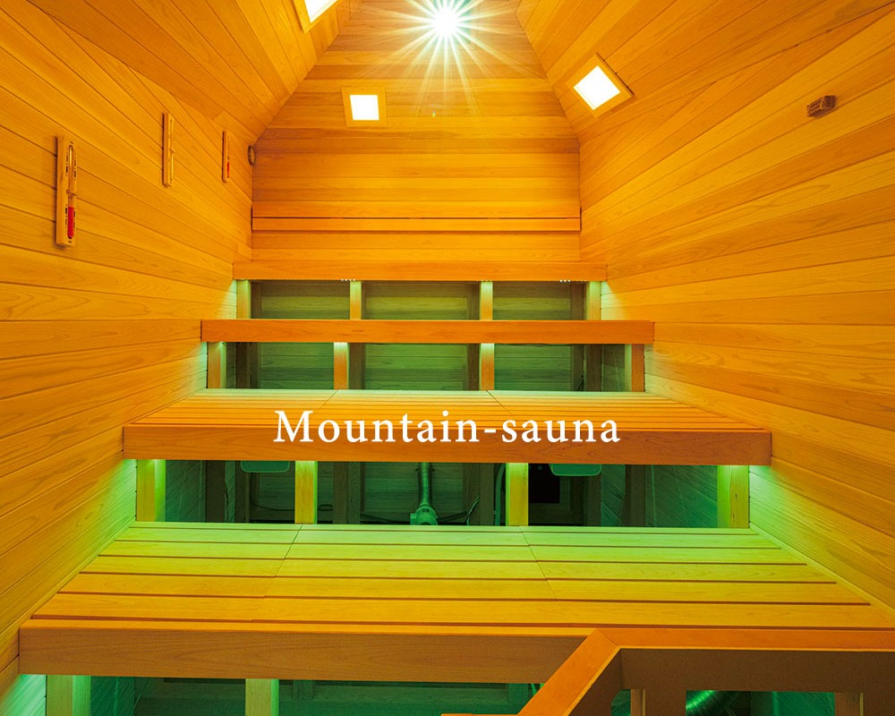
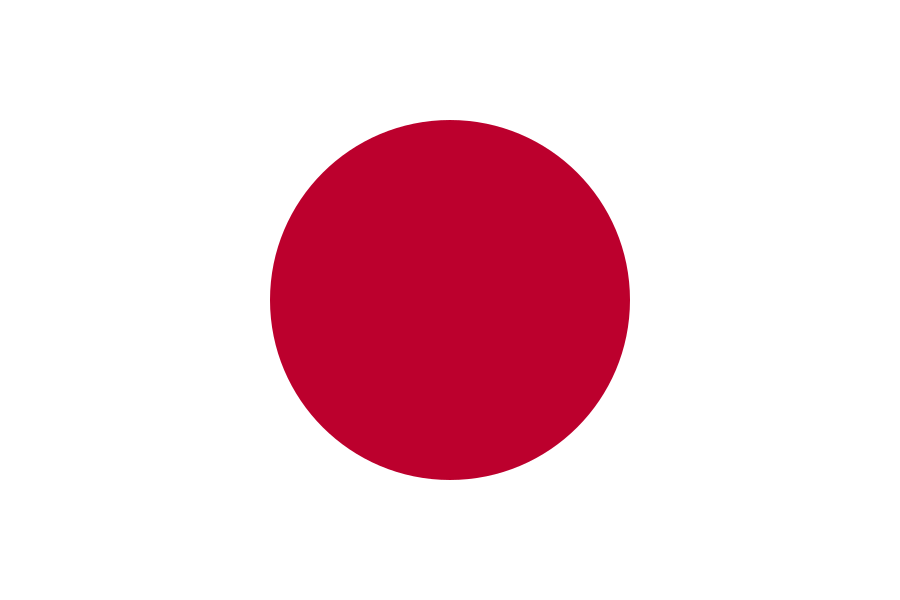
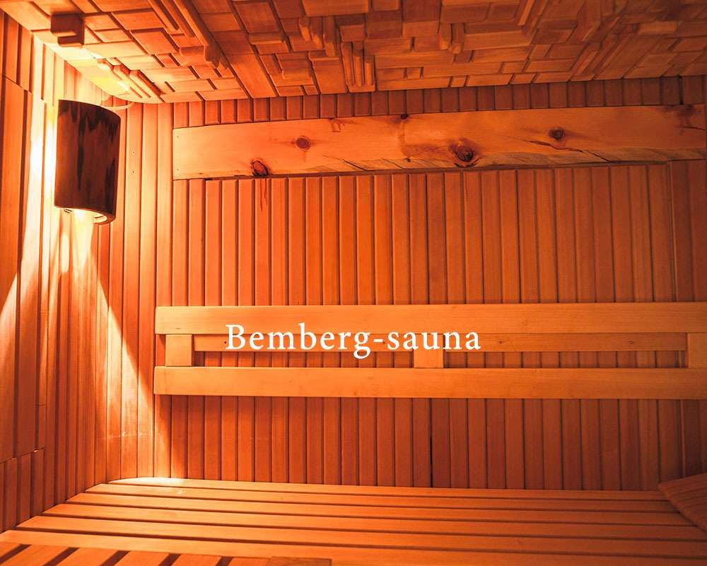
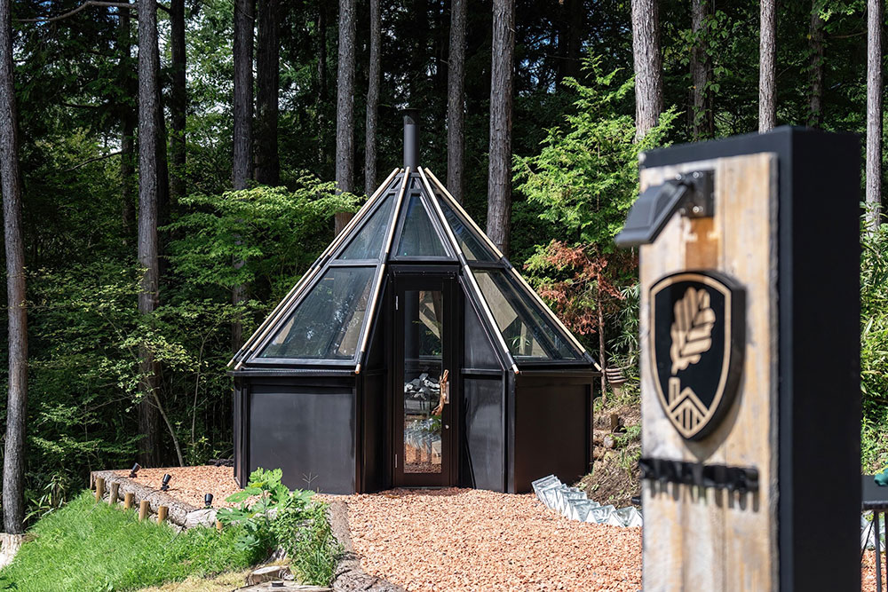

ケロサウナFinland
森と呼応する、200年のログ。
5 Saunas
それぞれに異なる熱・湿度・景色。48度の熱湯と10度の水風呂で温冷交代浴をくり返し、森の外気浴でととのう。1日かけて、あなただけの順路を描いてください。

森と呼応する、200年のログ。


古代ローマの湯、現代に。


熱の登山体験。

熱をマイルドに包み込む。

星空と焚き火を望む。
01 / 05
FAQ
水着着用のため、男女一緒にお楽しみいただけます。カップルやご夫婦、男女混合のグループにもおすすめです。
はい。手ぶらでお越しいただけ、スタッフが巡り方をご案内しますので、初心者の方も安心してお楽しみください。
水着は無料でレンタル可能（男性は競泳水着、女性はビキニタイプ）。着替えのみお持ちください。タオル・飲料水は館内でご提供します。
7〜4日前のキャンセル20%、3〜2日前50%、前日80%、当日・無連絡100%のキャンセル料を頂戴します。
館内のサウナバーで富士の天然水・各種ドリンク・軽食をご用意しております。外部からの飲食物持ち込みはご遠慮ください。
撮影は可能です。他のお客様のプライバシーにご配慮の上、お楽しみください。
現地でのお支払いとなります（現金・各種キャッシュレス決済対応）。
施設の貸切も可能です。料金や詳細は、メールまたは電話で直接お問い合わせください。
Access
〒410-1231 静岡県裾野市須山2255番地3644
東名高速道路〈裾野IC / 駒門スマートIC〉から約20分
御殿場エリアからの日帰りサウナに。御殿場アウトレットの帰りにも立ち寄れます。
最新の運行状況・時刻表は富士急静岡バスのサイトへ